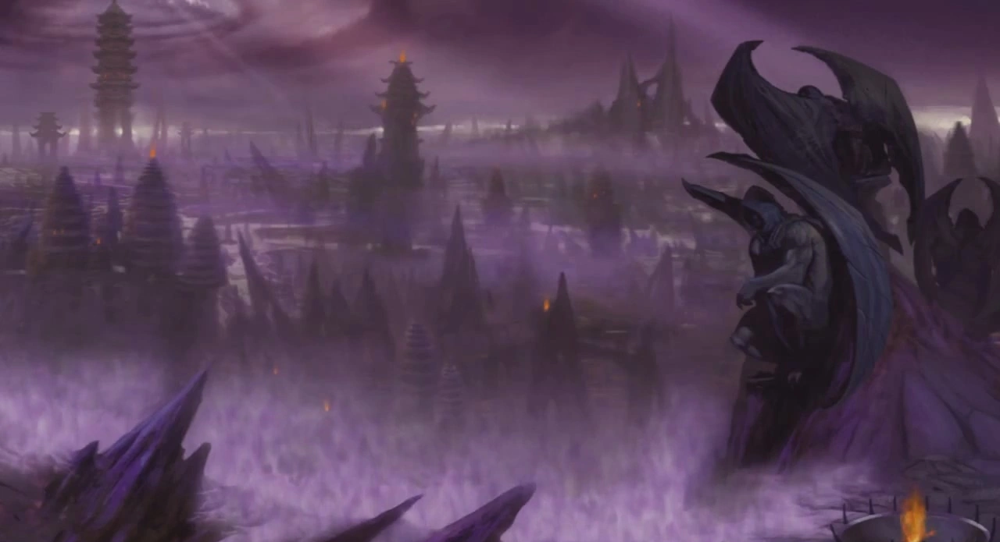

Ameaca
Em Mortal Kombat: Shaolin Monks, o reino da Terra (Earthrealm) estava se defendendo de uma ameaça vinda do reino de Outworld, liderada por Shang Tsung. Após ser derrotado por Liu Kang no torneio Mortal Kombat original, Shang Tsung fugiu para Outworld junto com seus aliados, como Goro, e começou a planejar uma nova invasão. O objetivo de Shang Tsung era dominar Earthrealm para consolidar o poder de Outworld e seu governante, Shao Kahn. A conquista do reino da Terra era parte de um plano maior para expandir o domínio de Shao Kahn sobre outros reinos. Essa situação colocou os heróis, Liu Kang e Kung Lao, no centro do conflito, enfrentando os guerreiros de Outworld para proteger Earthrealm e impedir que esse plano maligno se concretizasse.
